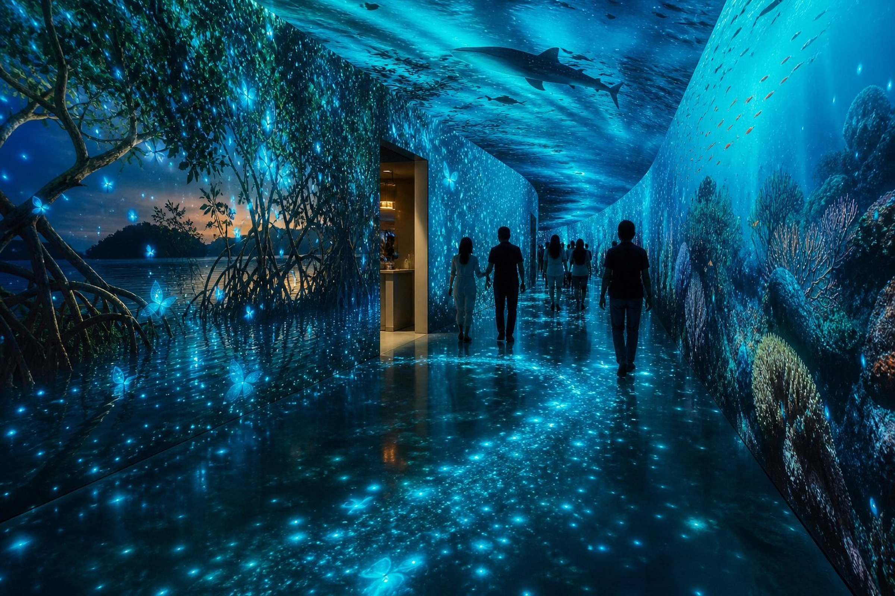
Concept visualization
Caribbean Data Portal
Walk through the living rhythms of the destination.
Environmental data
Presence
Architecture
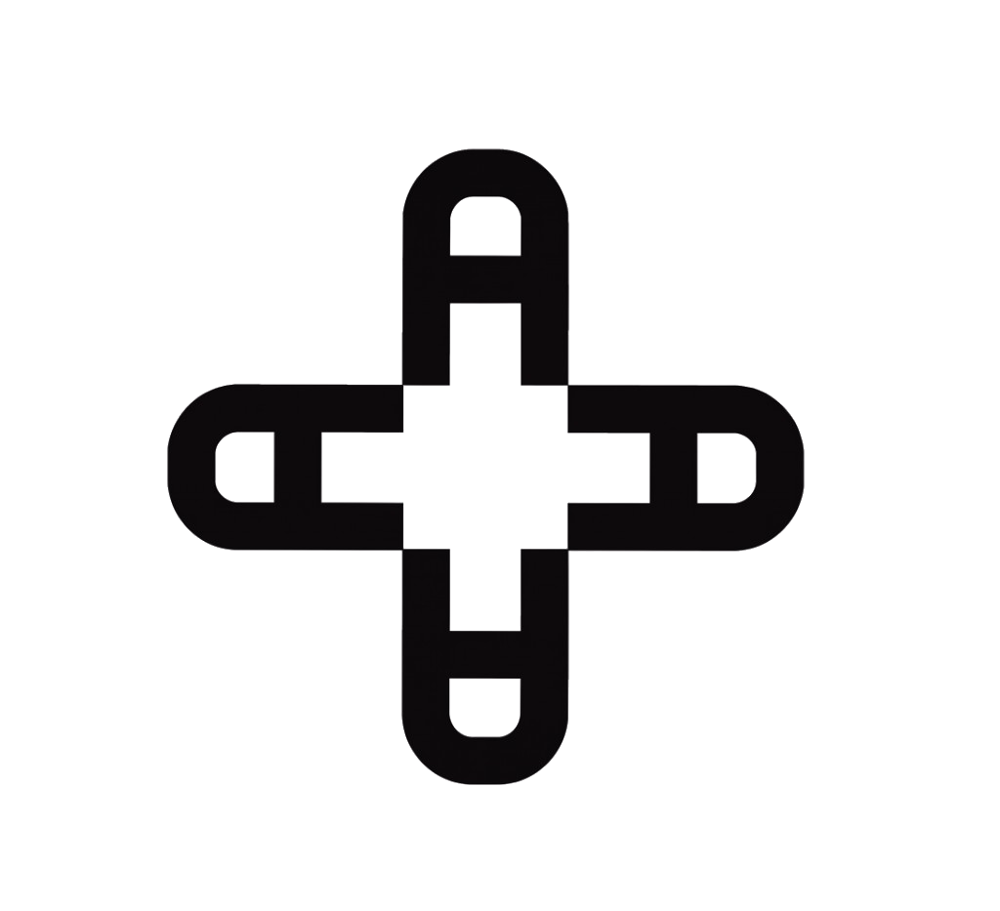
Andata Lab*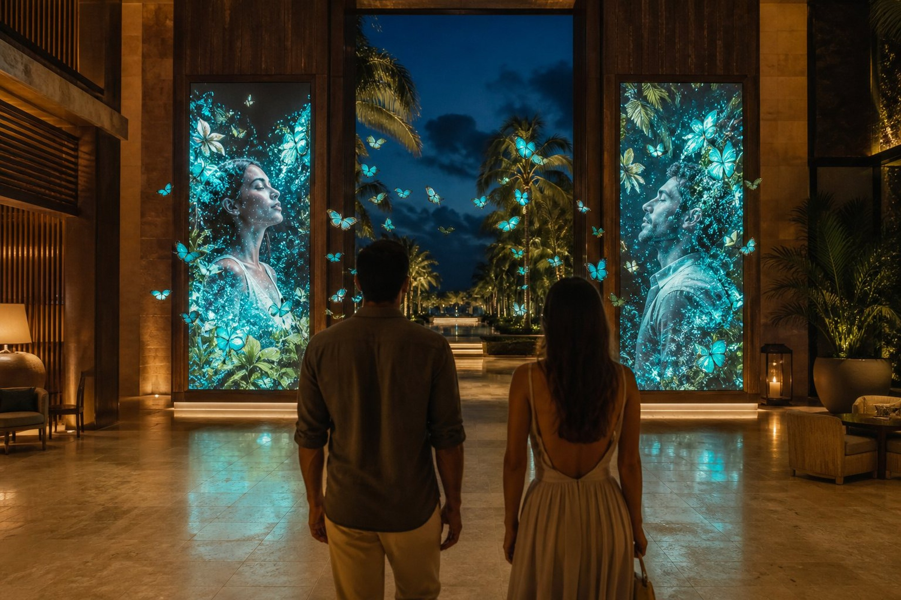
Permanent data-art environments shaped by place, time and guest presence.
Portrait of Place — flagship concept
Tide → rhythm · Wind → movement · Moon → density · Presence → response
Tide becomes rhythm. Wind becomes movement. Moon becomes density. Presence becomes response.
A visual explanation of the system — not a live property feed.
Proposed, not currently wired by ANDATA: CONABIO Geoportal, EncicloVida, SIMAR, Mexico’s Servicio Meteorológico Nacional, Caribbean sargassum monitoring, and on-site sensors — confirmed per property.

Walk through the living rhythms of the destination.
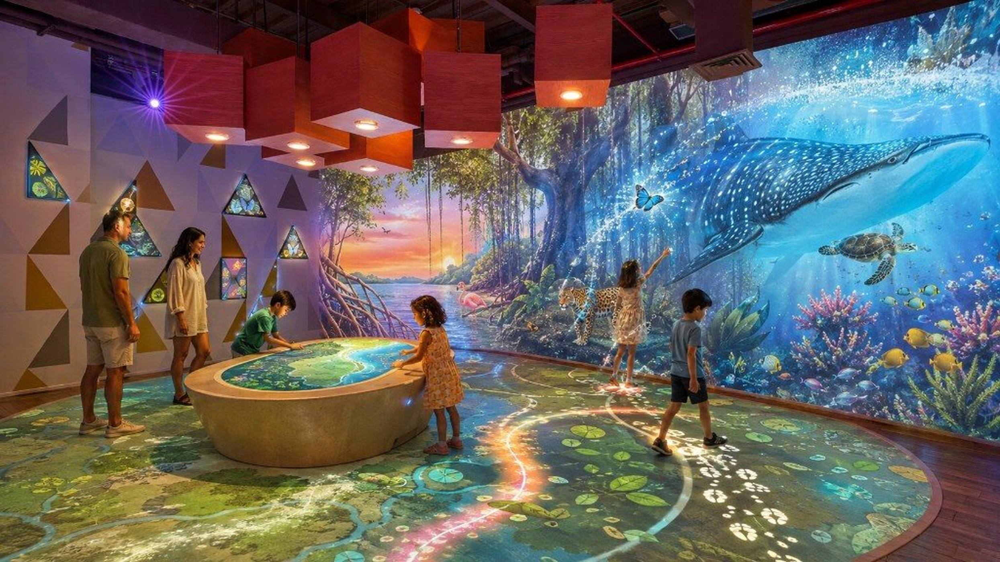
Every step reveals a new part of the Caribbean.
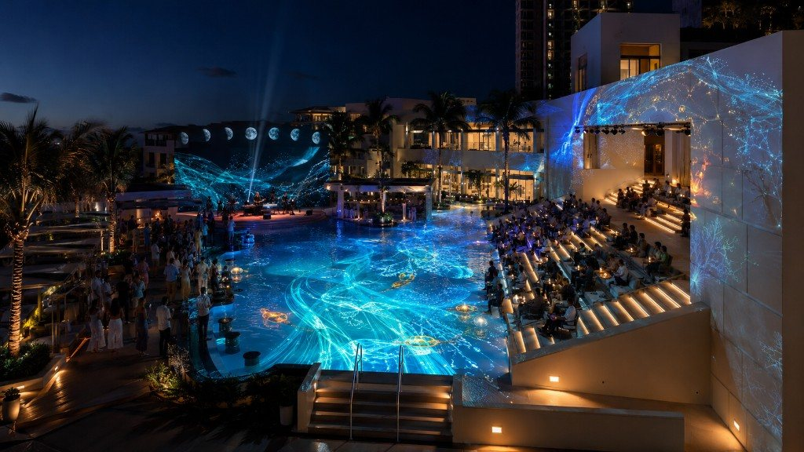
One permanent system. Infinite programmed moments.
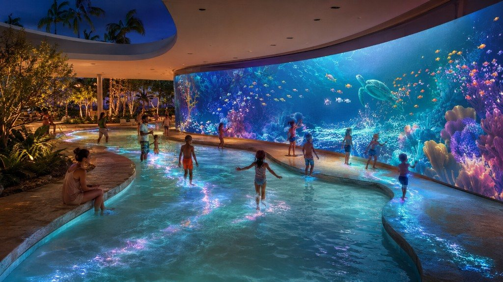
Movement becomes light in the water.
The guest completes the field by entering it.
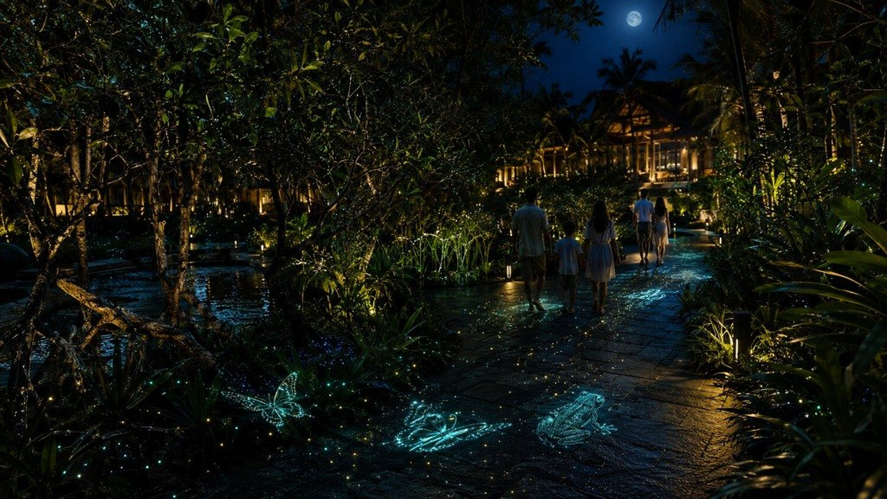
Species gather along the path.
Moon and hour change density and glow.
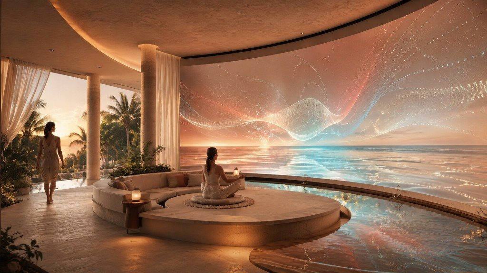
The room moves at the pace of the body.
Sunset, tide or breath can shift the field.
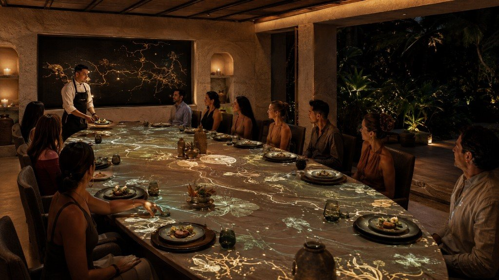
The table becomes the interface.
Light follows a menu, an origin, a night.
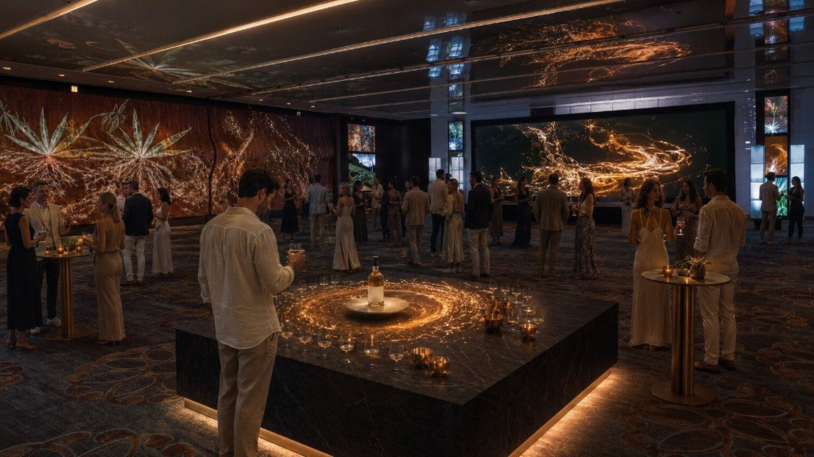
A night layer. The system stays.
By morning, the amenity returns to the destination.
From a quiet morning ritual to a signature night event.
Our hospitality concepts combine permanent museum installations, real-time sensing and architectural media already delivered by ANDATA.
An AI-driven mirror ritual for Día de Muertos — portraits, presence and live response.
Projection calibrated to historic architecture for a nocturnal lake narrative.
Presence, not identity — the architecture Portrait of Place would use.
Scheduled. Serviceable. Privacy-first. Ready to evolve.
Runs when the network does not.
No facial recognition. No identity stored by default.
Hotel hours. Automatic recovery.
Restarts after power or network interruption.
Remote updates. One artistic system.
Calibration, monitoring, staff documentation.
Depth cameras read silhouette and movement, not identity. An on-site edge computer drives TouchDesigner, GLSL and sensor logic. Outputs: architectural LED, projection, spatial audio, responsive light, private QR. Data sources are proposed per property — never implied as live ANDATA integrations.
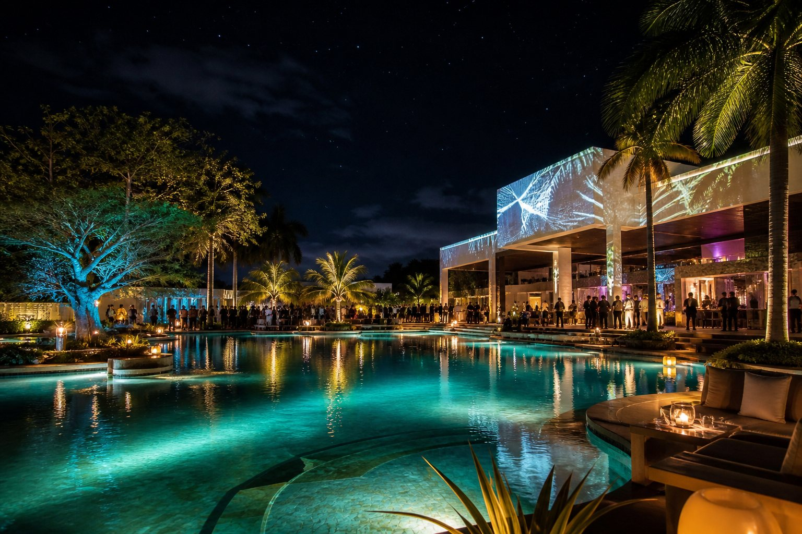
One property. One guest moment. One unforgettable pilot.
Discover → Prototype → Deploy